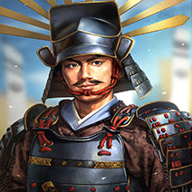
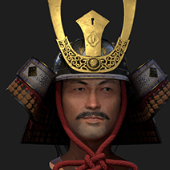
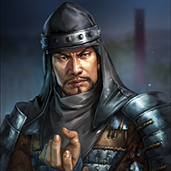

Miyamoto Musashi
Miyamoto Musashi also known as Shinmen Takezō, Miyamoto Bennosuke or, by his Buddhist name,
Niten
Dōraku, was a
Japanese swordsman, philosopher, strategist, writer and rōnin. Musashi, as he was often simply
known, became renowned through stories of his unique double-bladed swordsmanship and undefeated
record in his 61 duels. He is considered a Kensei, a sword-saint of
Japan. He was the founder of the Niten Ichi-ryū, or Nito Ichi-ryū, style of swordsmanship, and
in
his final years authored The Book of Five Rings
Oda Nobunaga
Oda Nobunaga was a Japanese daimyo and one of the leading figures of the Sengoku period. He is
regarded as the
first "Great Unifier" of Japan. His reputation in war gave him the nickname of "Demon King".
Tokugawa Ieyasu
Tokugawa Ieyasu was the founder and first shōgun of the Tokugawa Shogunate of Japan, which ruled
Japan from 1603
until the Meiji Restoration in 1868. He was one of the three "Great Unifiers" of Japan, along
with
his former lord Oda Nobunaga and fellow Oda subordinate Toyotomi Hideyoshi.

Toyotomi Hideyoshi
served as chief Imperial minister. He helped finish to 16th-century unification of Japan,
helping to create the country we know today. Toyotomi Hideyoshi was responsible for solidifying
the caste restrictions that marked Tokugawa Japan.
He also oversaw the destruction of many castles to reduce the number of strongholds in Japan.
All of this was done to help restore order after the tumults of Japan's civil wars. He abolished
road checkpoints to make transportation easier and conducted land surveys. Mineral resources
were
developed to help create coinage for easier trade.

Kusunoki Masashige
Kusunoki Masashige is still regarded as the model samurai. He was a member of the Akuto, which
was a group of samurais that came together against the governemnt due to not rewareded for their
actions. During this time samurais were very poor so they were upset because of this. He
declared war on the government. Masashige was one of the first to pledge their loyalty to the
Emperor. The odds were against them, but Masashige was certain his cunning could win the day.

Hattori Hanzo
Hattori Hanzo was known to be a fearless warrior and performed many feats in service of the
clan, including
rescuing Tokugawa's daughter from a castle and laying siege to another castle. Hanzo's ferocity
and skill in battle caused him to be known as “Demon Hanzo”.